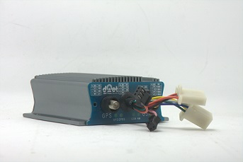

车辆安全管理系统
工程车管理系统介绍
公司自主研发的工程车GPS车辆远程安全管理系统平台，把工程车辆信息的采集和远程车辆监控管理有机结合，实现了车辆远程实时的监管。 该系统主要由防拆卸智能终端和系统软件构成，以全球卫星定位技术和嵌入式信息综合处理技术为核心，再结合地理信息技术、网络技术、GSM/GPRS通信技术、数据库技术、.NET软件技术等进行开发设计的，综合可靠的工程车安全管理系统。
监控终端设备功能
VM36 系列 GPS/GPRS 车载定位监控调度终端由上海大潮电子技术有限公司最新设计制造。系列本机主要包括主机、天线、电源信号线等组成。该款产品体积小巧、外形美观、技术先进、功能强大。该产品安装使用方便，按客户需求参数配置好直接通电工作即可，方便的实现车辆、船舶等移动目标的远程实时监控。 VM36 车载是继承 TMDT 2135 而来，在原有功能基础上，新增加了对油量表的监控、对行车速 度的监控、对车辆姿态与振动的监控、对 CAN 总线的支持、对 RS232 串口的支持、并预留了功能 扩展连接口。
车载设备具体功能
电源指示功能； 具有 4 路工作状态指示功能,，方便用户装配调试设备； GPS 定位， GSM/GPRS 无线数据通信， 2 路开关量输入， 1 路脉冲输， 2 路开关量输出，用于现场控制需求； 1 路模拟量输入，检测现场过程参数； 设备工作温度检测； 面板电源指示，行状态指示； 1 路 RS232 接口，需要协议配合； 1 路 CAN 接口.，需要协议配合； 加速度计，用于设备状态、振动等检测。